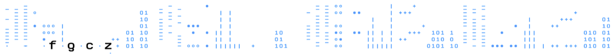

|  |
Sushi Documentation — Download and InstallPlease follow the download and installation instructions closely. Download Locations
Hard- and software requirementsThe sushi framework has been successfully deployed and run on Max OSX 10.9 and on the Linux distribution Debian 7. We do not have experience with Windows OS. If you experience problems please contact Hubert.Rehrauer/at/fgcz.uzh.ch. Installation Steps
Install RubyCheck if Ruby 1.9.3 is installed on your computer$ ruby -vIf Ruby is NOT installed or Ruby version is either under 1.9 or over 2.0, then follow the instructions to download and install Ruby version 1.9.3 from https://www.ruby-lang.org/en/downloads/
$ wget http://cache.ruby-lang.org/pub/ruby/1.9/ruby-1.9.3-p551.tar.gz $ tar zxvf ruby-1.9.3-p551.tar.gz $ cd ruby-1.9.3-p551 $ ./configure $ make $ sudo make installNote
$ ./configure --prefix=$HOME/bin/ruby-1.9.3 $ make $ make install Install bundlerCheck if bundle command is installed on your system.$ which bundleIf it is not installed, if the command answers bundle is not found, you need to install bundler RubyGem library as follows: $ gem install bundlerNote
GEM_HOME = $HOME/.gems
Install workflow_manager$ gem install workflow_manager Run $ workflow_manager mode = development ` druby://localhost:12345Note
Download Sushi (Ruby on Rails code)$ wget http://fgcz-sushi.uzh.ch/sushi_20150612.tgzor $ curl -O http://fgcz-sushi.uzh.ch/sushi_20150612.tgz Tar and bundle install $ tar zxvf sushi_20140814.tgz $ cd sushi $ bundle installNote
Set up database for Ruby on RailsGo to the Sushi directory, then $ bundle exec rake db:migrate RAILS_ENV=production Start Ruby on Rails server $ rails server -e productionNote
Configuration
Symbolic link to projects folderAfter test running of sushi server, a new directorypublic/gstore/projectsis created. Next, make a symbolic link to public/gstore/projects in public folder:
$ cd public
$ ln -s gstore/projects
This anable you to see a static file in gstore directory.
Workflow Manager configurationAfter the running of workflow_manager, the following default configuration file is created.
WorkflowManager::Server.configure do |config|
config.log_dir = 'logs'
config.db_dir = 'dbs'
config.interval = 30
config.resubmit = 0
config.cluster = WorkflowManager::LocalComputer.new('local_computer')
end
Note
Sushi configurationDefault Sushi configuration file is located at
config.workflow_manager = 'druby://localhost:12345' config.gstore_dir = File.join(Dir.pwd, 'public/gstore/projects') config.sushi_app_dir = Dir.pwd config.scratch_dir = '/tmp/scratch'Note
|